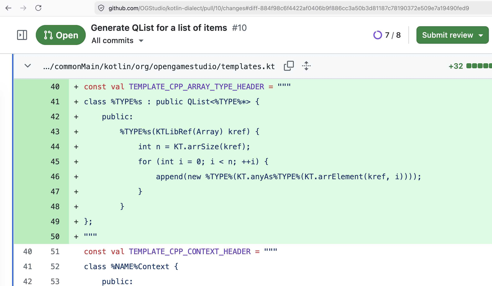

2026-07-03

В июне вернулся к доработке генератора Klin (Диалект Котлина):
добавил генерацию обёрток для работы со списками элементов. В Qt
обёртка над списком представлена типом QList<Item*>. Генерацию самого
Item ещё предстоить сделать.
В июле планирую завершить генерацию Item.